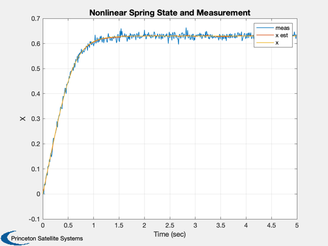
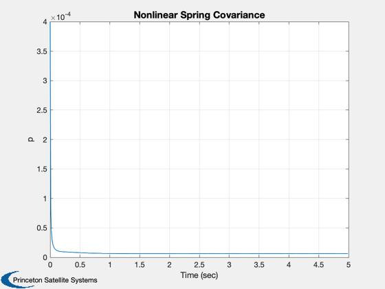
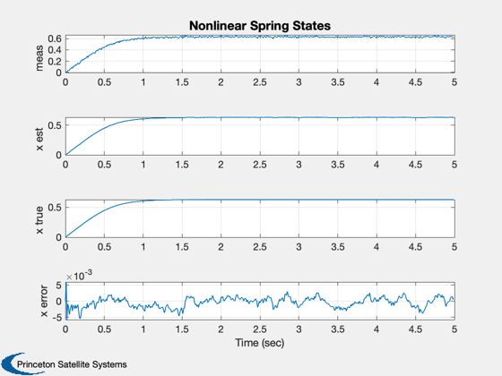
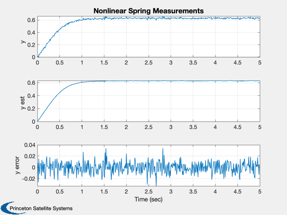

Simulate a UKF with a nonlinear spring example.
Select either the UKF or UKUDF ------------------------------------------------------------------------- See also Plot2D, RK4, UKF, UKUDF -------------------------------------------------------------------------
Contents
%-------------------------------------------------------------------------- % Copyright (c) 2006, 2008 Princeton Satellite Systems, Inc. % All rights reserved. %--------------------------------------------------------------------------
Select the filter
%------------------ filter = @UKF; % Full covariance matrix filter %filter = @UKUDF; % UD factorized filter (square root)
Simulation parameters
%---------------------- nSim = 500; dRHS.u = 1; % Step disturbance dRHS.w = 4; % Spring constant sigY = 0.01;%0.05; xP = zeros(5,nSim); x = 0; dT = 0.01;
Estimation parameters
%---------------------- d.x = 0; d.p = 0.0004; d.int = 'RK4'; d.rHSFun = 'RHSUKF'; d.measFun = 'GXUKF'; d.measFunData = []; d.alpha = 0.8e-3; d.kappa = 0; d.beta = 2; d.dY = 1; d.dT = dT; d.rHSFunData = dRHS; d.rM = sigY^2; d.rP = 1e-2*d.rM; d = filter('initialize', d ); t = 0; y = 0; d.y = y;
Simulation loop
%---------------- for k = 1:nSim % Plotting %--------- xP(:,k) = [y; d.x; x; d.p; d.y]; % Update the RHS %--------------- x = RK4( 'RHSUKF', x, dT, t, dRHS ); % x = x + sqrt(d.rP)*randn; % Measurement %------------ y = x + sigY*randn; t = t + dT; % Kalman Filter %-------------- d.t = t; d = filter( 'update', d, y ); end
Plot the results
%----------------- t = (0:(nSim-1))*dT; Plot2D( t, xP(1:3,:), 'Time (sec)', 'X', 'Nonlinear Spring State and Measurement' ); leg = ['meas ';'x est';'x ']; legend(leg) xLbl = {'meas' 'x est' 'x true' 'x error'}; Plot2D( t, xP(4,:), 'Time (sec)', 'p', 'Nonlinear Spring Covariance' ); Plot2D( t, [xP(1:3,:);xP(2,:) - xP(3,:)], 'Time (sec)', xLbl, 'Nonlinear Spring States' ); xMeas = {'y' 'y est' 'y error'}; Plot2D( t, [xP([1 5],:);xP(1,:) - xP(5,:)], 'Time (sec)', xMeas, 'Nonlinear Spring Measurements' ); %-------------------------------------- % PSS internal file version information %-------------------------------------- % $Date$ % $Id: a902920578d9c2f767bf260d45f62b307b8bfa25 $   